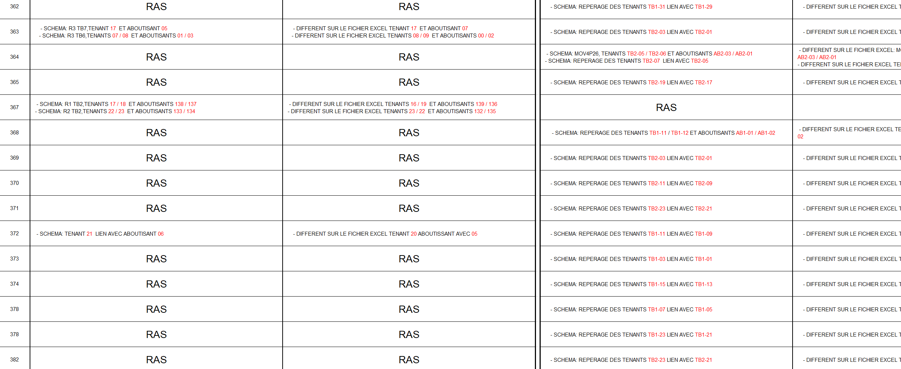

Projet principal - Création d'un outil d'analyse des données commerciales
Ce projet a pour but de répondre à un besoin du service avant-ventes. Toutes les données classifiées dans Excel ne sont pas liées et difficilement exploitables et présentables. Mon sujet de stage a donc consisté à développer un outil pour le suivi des performances des offres commerciales.
Pour cela, il était donc nécessaire que je récupère les données, ici ce seront celles de l'année 2024. Ensuite, j'ai dû analyser les données, essayer déjà moi-même de les comprendre pour aussi avoir une meilleure visualisation. Il y avait évidemment plusieurs sources de données. Également, essayer d'étudier les liens potentiels entre elles pour la suite. Une fois cette étape réalisée et compte tenu des données, j'ai décidé d'importer ces données dans Power BI, qui est un logiciel réputé pour les projets à traitement de données et qui facilite grandement leur exploitation. Une fois importées, j'ai utilisé Power Query, déjà intégré à Power BI, pour mettre en forme les données, supprimer les valeurs nulles, ajuster les valeurs ou formats de données corrects. En fait, il permet de passer de données brutes à des données beaucoup plus exploitables par la suite dans Power BI. Cela m'a aussi permis de réaliser des liens entre les différentes sources de données.

Lorsqu'on m'a présenté le projet, le service avant-ventes attendait des KPI particuliers pour exploiter des données précises. Une fois ce premier processus fait, j'ai commencé à étudier la manière dont j'allais réaliser les graphiques, mais pour certains je n'avais pas les données nécessaires ou il restait encore certaines choses à extraire ou filtrer.
C'est ici que va entrer en jeu le DAX, comme vous allez le voir, ça va être une partie importante de mon projet de stage. Le DAX, c'est quoi ? C'est en fait une collection de fonctions, d'opérateurs et de constantes qui peuvent être utilisées dans une formule ou une expression pour calculer et retourner une ou plusieurs valeurs. Le DAX va vous permettre de créer des informations à partir des données qui se trouvent déjà dans votre modèle.
Les données se trouvent, comme vous pouvez le voir sur les illustrations, dans la section "Données" à droite de l'espace de travail. J'ai donc, en fonction des KPI demandés, pris les données qui me semblaient utiles pour les intégrer à celui-ci. Voici, par exemple, le fonctionnement de ce premier graphique.
Ensuite, il y a des KPI où je n'ai pas les données, ou elles sont tout simplement trop brutes. Aussi, parfois, il fallait les calculer à l'aide d'autres données. Pour avoir un exemple concret, voici le graphique attendu et le KPI final. Au vu des données que j'avais, j'ai utilisé du DAX.
J'ai donc réalisé cela pour tous les KPI et mis en forme le rapport. Vous pourrez trouver le lien téléchargeable du rapport juste ci-dessous. Évidemment, le projet ne demande que des améliorations et ajouts à l'avenir. On peut aussi l'utiliser en vue de présentation grâce aux outils Microsoft.
Projet secondaire - IA d’annotation automatique
Quand je suis arrivé ici, d'autres étudiants IA travaillaient déjà sur un projet. Ce projet a pour but d'automatiser les annotations des schémas électriques par l'IA. (Ici folio du client TOTAL ENERGIES). Il fallait entraîner le modèle et l'aider à comprendre ce qu'il devait repérer sur les schémas, nous avons donc utilisé le logiciel Roboflow qui est un outil d'étiquetage d'images.
C'est un processus plutôt long de réaliser cela sur les nombreux folios d'entraînement, donc j'ai apporté de l'aide la première semaine sur cette partie annotation. Puis, une fois ce processus réalisé, ils ont récupéré les données et ont pu entraîner le modèle et apporter les modifications nécessaires.
Pour passer les données dans le modèle, l'outil utilisé était YOLO, qui est un véritable détecteur d'objets. Il est couramment utilisé car il est simple à installer, puissant et rapide.
Une fois ces données passées dans le modèle, nous avions les résultats dans un fichier Excel, pour voir si cela fonctionnait et surtout voir la précision, comparée à nos données d'annotations réelles, repérer les différentes erreurs et les annoter dans un tableau. Cela a permis aux étudiants de corriger leurs erreurs par la suite. 